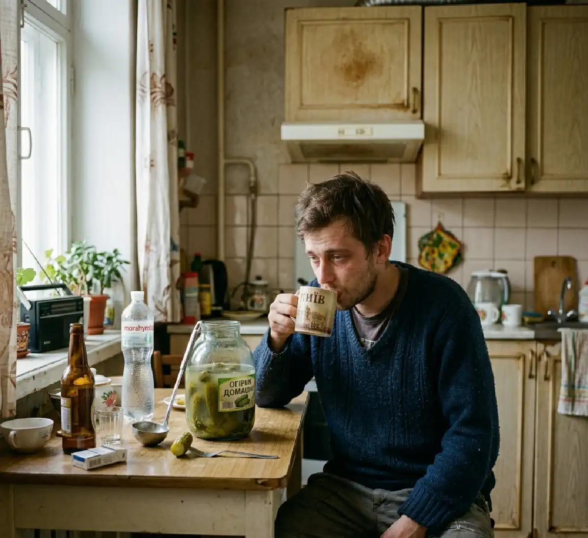

+38(068) 79 72 782
+38(068) 79 72 782Як швидко позбутися похмілля — Дієві поради
Поради лікаря нарколога


Безкоштовна консультація, працюємо цілодобово 24/7
Поради лікаря нарколога

Дата написання: 12 квіт. 2026 р.
Останнє оновлення: 12 квіт. 2026 р.
Похмілля — це стан, знайомий багатьом після вживання алкоголю, який супроводжується неприємними фізичними та психоемоційними симптомами. Воно виникає через інтоксикацію організму продуктами розпаду етанолу, насамперед ацетальдегіду, а також зневоднення, порушення водно-електролітного балансу та підвищене навантаження на печінку, серце та нервову систему. Алкоголь впливає практично на всі органи, тому погіршення самопочуття має комплексний характер. Чим більший обсяг і тривалість вживання, тим сильніше страждає організм і тим виразніші симптоми наступного дня. Особливу роль відіграють індивідуальні особливості: швидкість обміну речовин, стан печінки, наявність хронічних захворювань і навіть якість вживаного алкоголю.
Хороша новина в тому, що при правильному та своєчасному підході можна значно полегшити стан, знизити вираженість симптомів та прискорити відновлення організму вже в перші години. Грамотні дії допомагають швидше вивести токсини, відновити баланс рідини та підтримати роботу життєво важливих систем, що помітно покращує самопочуття та скорочує період похмілля.
Основною причиною похмілля є розпад алкоголю в організмі з утворенням токсичних речовин, насамперед ацетальдегіду. Ця сполука має виражену отруйну дію на клітини, порушує роботу нервової системи та судин, викликає запальні реакції та погіршує загальне самопочуття. Додатково на розвиток похмілля впливають зневоднення, втрата електролітів, дефіцит вітамінів (особливо групи B), порушення сну та підвищене навантаження на печінку, яка відповідає за знешкодження токсинів. Також важливо враховувати, що алкоголь впливає на рівень цукру в крові, гормональний баланс та роботу головного мозку, що посилює відчуття слабкості, тривожності та розбитості наступного дня. Симптоми похмілля можуть включати:
Вираженість симптомів залежить від кількості випитого алкоголю, індивідуальних особливостей організму та загального стану здоров’я.
У домашніх умовах можна значно полегшити стан, якщо діяти правильно та комплексно. Важливо не намагатися «перетерпіти» похмілля, а допомогти організму швидше впоратися з наслідками інтоксикації, знизити навантаження на внутрішні органи та відновити порушений баланс рідини та мікроелементів. Основні рекомендації:
Додатково рекомендується:
Поступове повернення до звичайної активності без перевантажень допомагає організму відновитися швидше та без ускладнень. Головне завдання — максимально підтримати організм у цей період: прискорити виведення токсинів, відновити водно-електролітний баланс, нормалізувати роботу нервової та серцево-судинної систем та створити умови для природного відновлення без зайвого стресу.
Ранок після вживання алкоголю найчастіше супроводжується найбільш вираженими симптомами: головним болем, слабкістю, нудотою, сухістю в роті та відчуттям «розбитості». Саме в цей період важливо правильно почати відновлення, щоб полегшити стан і не посилити навантаження на організм. Для швидкого полегшення стану рекомендується:
Корисно уникати різких рухів, яскравого світла та гучних звуків, оскільки нервова система в цей період особливо чутлива. Також важливо не перевантажувати шлунок важкою їжею і не вживати каву у великих кількостях. Такі прості, але правильні заходи допомагають прискорити відновлення, знизити вираженість симптомів та значно покращити самопочуття вже в перші години після пробудження.
Існує низка препаратів, які можуть допомогти при похміллі, особливо якщо симптоми виражені та заважають нормальному самопочуттю. При грамотному застосуванні вони дозволяють прискорити відновлення та полегшити стан вже в перші години. До основних засобів належать:
При вираженій нудоті можуть застосовуватися протиблювотні препарати:
Додатково при необхідності можуть використовуватися препарати для підтримки печінки та легкі седативні засоби, проте їх застосування бажано узгоджувати з лікарем. Важливо приймати будь-які ліки суворо згідно з інструкцією, не перевищувати рекомендовані дозування та враховувати протипоказання. При наявності хронічних захворювань або погіршенні стану краще звернутися за медичною допомогою.
При похміллі особливо важливо правильно підібрати напої, оскільки саме відновлення водно-електролітного балансу відіграє ключову роль у покращенні самопочуття. Алкоголь має виражений сечогінний ефект, через що організм втрачає велику кількість рідини та важливих мікроелементів. Це призводить до слабкості, головного болю, тахікардії та погіршення загального стану. Тому грамотне поповнення рідини допомагає не лише зменшити симптоми, а й прискорити виведення токсинів, нормалізувати роботу серця, нервової системи та обмінних процесів. Рекомендується вживати:
Пити краще невеликими порціями, але регулярно — кожні 10–15 хвилин. Це дозволяє уникнути перевантаження шлунка і знижує ризик посилення нудоти або блювання. Різке вживання великого об’єму рідини за один раз може погіршити стан.
Харчування відіграє важливу роль у відновленні організму після похмілля, оскільки допомагає заповнити дефіцит поживних речовин, підтримати роботу внутрішніх органів та прискорити виведення токсинів. У цей період важливо вибирати легку, поживну їжу, що легко засвоюється, яка не перевантажує шлунок і сприяє поступовому відновленню сил. Рекомендуються такі продукти:
Прийом їжі має бути дробним та помірним — краще їсти невеликими порціями кілька разів на день. Це дозволяє не перевантажувати шлунково-кишковий тракт і поступово повертати організм до нормального функціонування.
При похміллі важливо не тільки правильно підібрати корисні продукти, а й виключити ті, які можуть погіршити стан, посилити інтоксикацію та збільшити навантаження на організм. Неправильне харчування в цей період може продовжити відновлення та спровокувати додаткові симптоми. Продукти, що не рекомендуються при похміллі:
Заборонені продукти та напої:
У період похмілля організму потрібен щадний режим. Легка, нейтральна їжа та достатня кількість рідини допомагають швидше відновитися, тоді як важкі та подразнювальні продукти уповільнюють цей процес і можуть призвести до погіршення стану.
У деяких випадках похмілля може переходити в небезпечний стан, що потребує термінового медичного втручання. Це пов’язано з вираженою інтоксикацією організму, порушенням роботи серцево-судинної системи, нервової системи та внутрішніх органів. Подібні стани можуть розвиватися швидко і становити серйозну загрозу для здоров’я та життя, особливо при тривалому вживанні алкоголю або наявності хронічних захворювань. У таких ситуаціях вкрай важливо не намагатися впоратися самостійно, а якнайшвидше звернутися за кваліфікованою допомогою. Тривожні симптоми, при яких необхідний виклик лікаря:
Ігнорування таких симптомів може призвести до тяжких ускладнень, включаючи порушення роботи серця, дихання, розвиток гострих психічних станів та інших небезпечних наслідків. При появі хоча б одного з перерахованих ознак важливо не відкладати звернення за медичною допомогою. Своєчасне втручання дозволяє швидко стабілізувати стан пацієнта, зняти гострі симптоми, запобігти розвитку ускладнень і значно підвищити шанси на швидке та безпечне відновлення.
Крапельниця від похмілля є одним із найефективніших методів лікування тяжкого похмілля, особливо при вираженій інтоксикації, сильній слабкості та стані, коли людина не може відновитися самостійно. На відміну від домашніх методів, інфузійна терапія діє значно швидше, оскільки необхідні препарати надходять безпосередньо в кров, минаючи шлунково-кишковий тракт, що забезпечує швидший і вираженіший ефект.
Під час процедури відбувається активне виведення токсинів та продуктів розпаду алкоголю, відновлюється водно-електролітний баланс, нормалізується робота серцево-судинної системи та нервової системи. Додатково організм отримує необхідні вітаміни та підтримувальні препарати, що допомагає знизити навантаження на печінку, зменшити симптоми інтоксикації та значно покращити загальне самопочуття вже в процесі лікування. Крапельниця від похмілля дозволяє швидко усунути такі прояви, як головний біль, нудота, слабкість, тривожність, тремор та порушення сну. Вже за короткий час пацієнт відчуває полегшення, стабілізується тиск, пульс та загальний стан.
Така наркологічна допомога особливо актуальна при тривалому вживанні алкоголю, тяжкому похміллі та в ситуаціях, коли звичайні методи не дають результату. Послуга доступна з виїздом додому в різних містах, включаючи (Київ | Харків | Одеса | Дніпро | Львів | Запоріжжя | Черкаси) та інші населені пункти, що дозволяє отримати кваліфіковану допомогу максимально швидко і в комфортних умовах.
Похмілля — це тимчасовий стан, що виникає після вживання алкоголю, який пов’язаний з інтоксикацією організму продуктами розпаду етанолу і зазвичай проходить протягом доби при правильному відновленні. Воно супроводжується такими симптомами, як головний біль, слабкість, нудота, спрага, сухість у роті та загальне нездужання. Незважаючи на неприємні відчуття, при похміллі людина зберігає контроль над своєю поведінкою, здатна відмовитися від подальшого вживання алкоголю і, як правило, поступово повертається до нормального стану без серйозних наслідків для здоров’я.
Запій — це значно важчий і небезпечніший стан, при якому людина вживає алкоголь протягом декількох днів або навіть тижнів і не може зупинитися самостійно. У цей період організм постійно піддається токсичному впливу, наростає зневоднення, порушується робота печінки, серця, судин та центральної нервової системи. Людина втрачає контроль над кількістю випитого, а спроби припинити вживання часто супроводжуються вираженим абстинентним синдромом — тривогою, тремором, безсонням, стрибками тиску, тахікардією, а у важких випадках — судомами та психічними розладами.
Запам’ятайте, запій — це не просто тривале вживання алкоголю, а прояв сформованої залежності, при якій організм уже не може функціонувати без регулярного надходження алкоголю. Самостійні спроби вийти з цього стану можуть бути небезпечними і призвести до погіршення самопочуття або розвитку ускладнень. У таких ситуаціях необхідний професійний медичний підхід, який включає детоксикацію, контроль життєво важливих показників, медикаментозну підтримку та подальше лікування залежності. Своєчасна допомога дозволяє безпечно вивести людину із запою, стабілізувати її стан, знизити ризик ускладнень та створити основу для повного відновлення та повернення до тверезого життя.
Серед народних методів полегшення похмілля існує безліч варіантів, які застосовуються вже багато років. Вони засновані на природній підтримці організму, поповненні рідини, частковому відновленні обміну речовин та м’якому зниженні симптомів інтоксикації. Однак важливо розуміти, що такі методи дають лише допоміжний ефект і не здатні повністю усунути наслідки сильного отруєння алкоголем. До найбільш популярних народних засобів належать:
Слід враховувати, що ефективність народних засобів багато в чому залежить від стану організму та ступеня інтоксикації. При легкому похміллі вони дійсно можуть трохи полегшити симптоми, зменшити дискомфорт і підтримати відновлення. Однак при більш важких станах їх дії часто недостатньо.
Найбільш ефективний підхід до відновлення після похмілля — це комплексний вплив на організм. Важливо не обмежуватися одним заходом, а одночасно підтримати водний баланс, нервову систему, обмін речовин та роботу внутрішніх органів. Алкоголь має системний вплив, тому і відновлення має бути поетапним і різнобічним. Такий підхід дозволяє не тільки швидше впоратися з наслідками інтоксикації, а й значно полегшити загальне самопочуття вже в перші години. Ключові елементи відновлення:
Додатково рекомендується:
Поступове відновлення без різких навантажень дозволяє організму прийти в норму максимально безпечно і без ускладнень. Важливо дати тілу час на відновлення і не намагатися прискорити процес агресивними методами.
Найкращий спосіб боротьби з похміллям — це його профілактика. Набагато простіше запобігти важкому стану, ніж потім боротися з наслідками інтоксикації. Грамотний підхід до вживання алкоголю дозволяє значно знизити навантаження на організм, зменшити ризик зневоднення та уникнути виражених симптомів наступного дня. Основні рекомендації:
Додатково рекомендується не змішувати різні види алкоголю, уникати занадто швидких темпів вживання і віддавати перевагу легкій їжі під час застілля. Це знижує навантаження на травну систему і допомагає організму краще переробляти алкоголь. Дотримання цих рекомендацій дозволяє значно знизити ризик важкого похмілля, зберегти гарне самопочуття та уникнути негативних наслідків для здоров’я.

Статтю перевірено експертом
Могучев Станіслав
Лікар-терапевт, ординатор
Можливо цікава стаття:
Янтарна кислота, Бетаргін та Ентеросгель при алкогольної інтоксикації

Так, ми суворо дотримуємося повної конфіденційності на всіх етапах лікування. Інформація про пацієнта, діагноз та проходження терапії не передається третім особам. Звернення до нас не тягне за собою постановку на облік. Ви можете бути впевнені у безпеці та анонімності.
Програма лікування розробляється індивідуально після консультації з фахівцем. Враховуються вид залежності, її тривалість, фізичний та психологічний стан пацієнта. Такий підхід дозволяє підвищити ефективність терапії та знизити ризик зриву. Ми не використовуємо шаблонні рішення.
Так, ми супроводжуємо пацієнтів і після основного курсу лікування. Проводяться консультації, рекомендації щодо адаптації та профілактики рецидивів. За потреби можлива подальша психологічна підтримка. Це допомагає зберегти результат та повернутися до повноцінного життя.
Номер телефону:
+380 (68) 797 27 82
+380 (50) 021 69 57
Адресу наркологічного центра вашого міста уточнюйте за
телефоном
Працюємо: Київ, Одеса, Львів, Харків, Дніпро, Запоріжжя,
Черкасах, Чугуєві, Чорноморську, Кам'янському
Telegram: t.me/umbrellaplus
Графік работы: Цілодобово